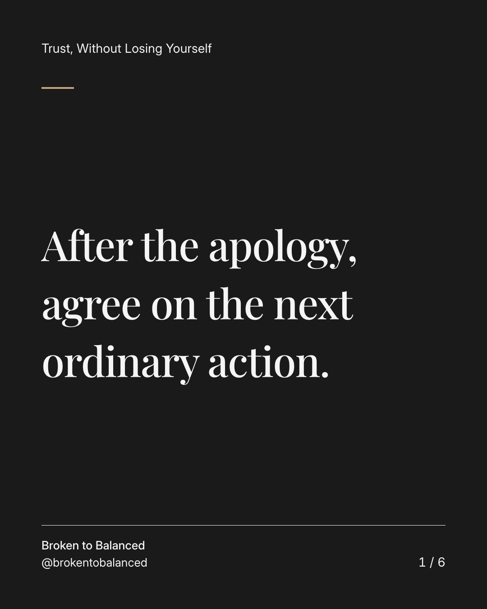
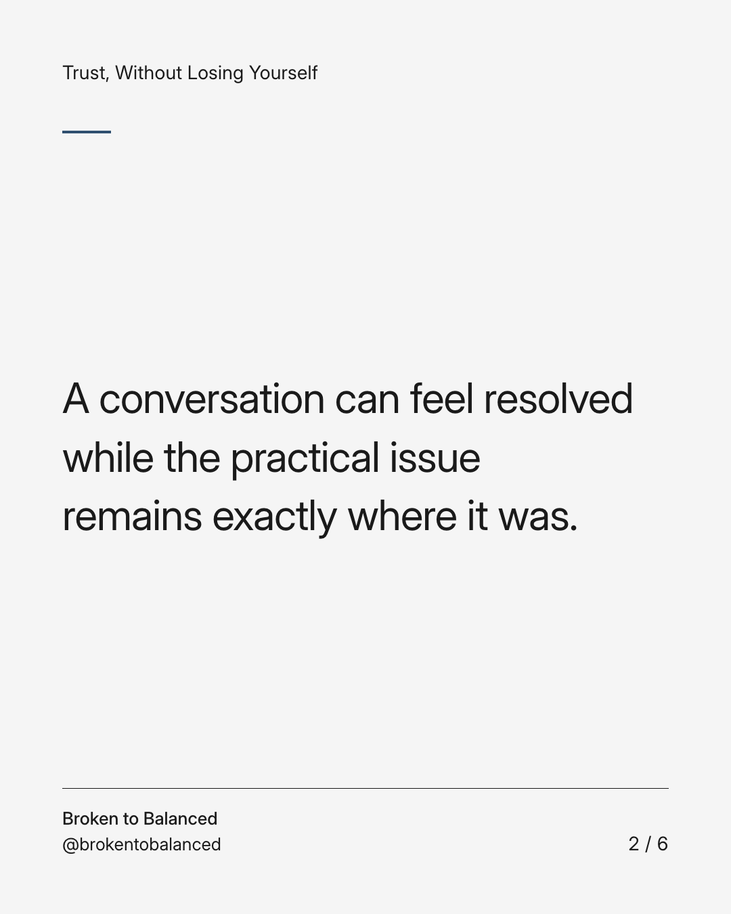
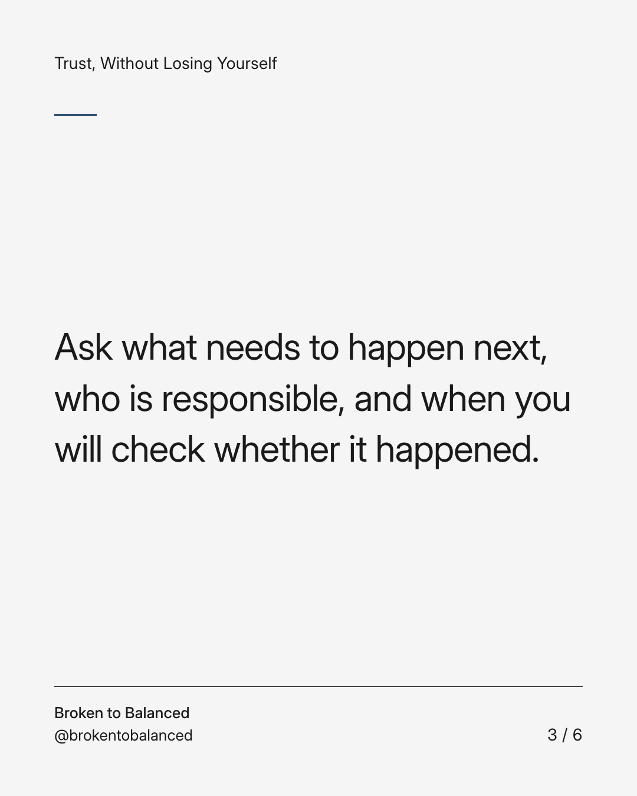
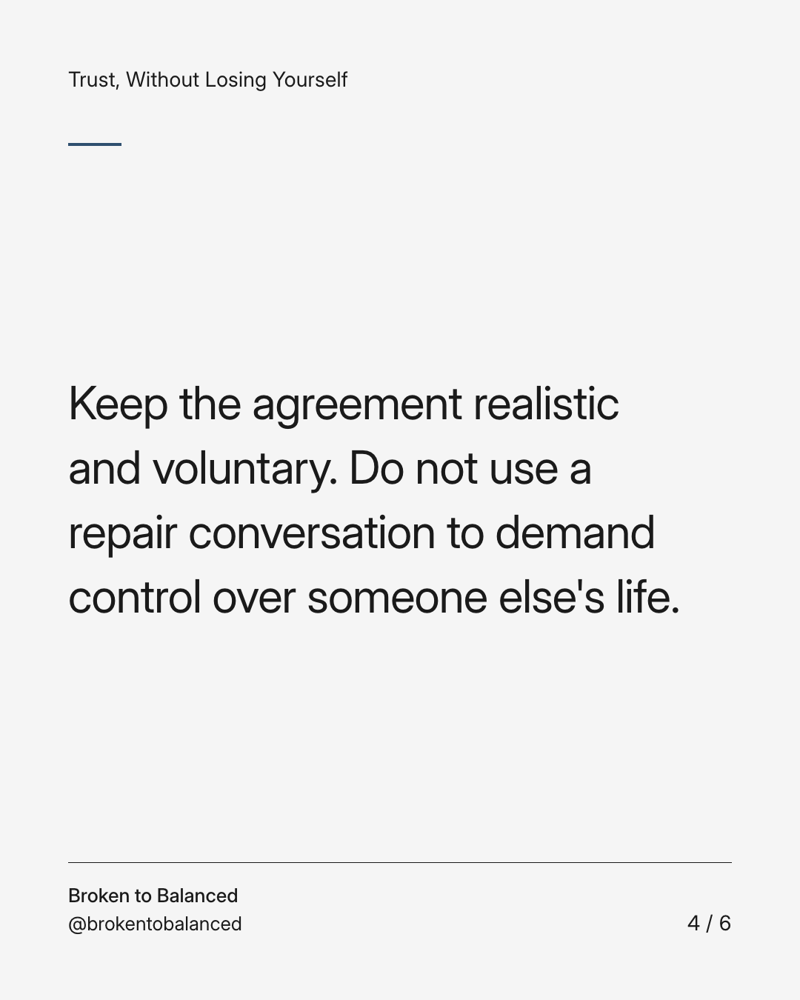
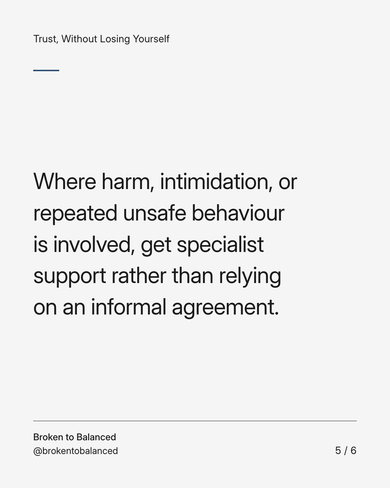
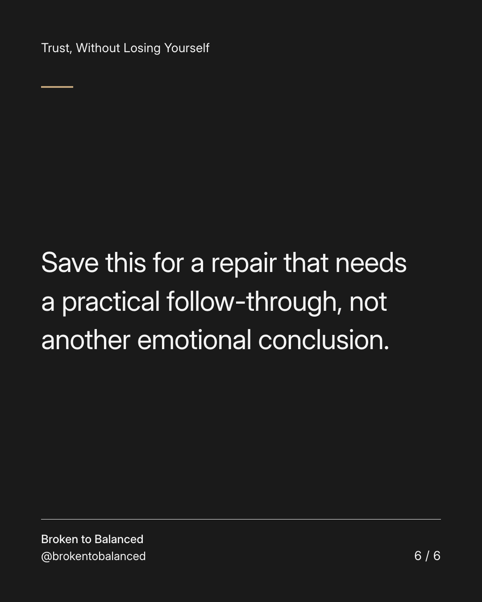

Exact text and accessibility text
After the apology, agree on the next ordinary action.
Slide 1 of 6. After the apology, agree on the next ordinary action.


Exact text and accessibility text
A conversation can feel resolved while the practical issue remains exactly where it was.
Slide 2 of 6. A conversation can feel resolved while the practical issue remains exactly where it was.


Exact text and accessibility text
Ask what needs to happen next, who is responsible, and when you will check whether it happened.
Slide 3 of 6. Ask what needs to happen next, who is responsible, and when you will check whether it happened.


Exact text and accessibility text
Keep the agreement realistic and voluntary. Do not use a repair conversation to demand control over someone else's life.
Slide 4 of 6. Keep the agreement realistic and voluntary. Do not use a repair conversation to demand control over someone else's life.


Exact text and accessibility text
Where harm, intimidation, or repeated unsafe behaviour is involved, get specialist support rather than relying on an informal agreement.
Slide 5 of 6. Where harm, intimidation, or repeated unsafe behaviour is involved, get specialist support rather than relying on an informal agreement.


Exact text and accessibility text
Save this for a repair that needs a practical follow-through, not another emotional conclusion.
Slide 6 of 6. Save this for a repair that needs a practical follow-through, not another emotional conclusion.
Exact caption
Plain-text fallback: select and copy the caption.